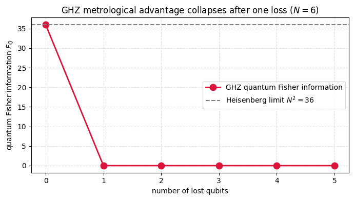

The GHZ state \((|0\rangle^{\otimes N} + |1\rangle^{\otimes N})/\sqrt{2}\) is the textbook probe for phase estimation at the Heisenberg limit, where the quantum Fisher information reaches \(N^2\) against the \(N\) that \(N\) independent probes would give. That Fisher information sets how finely a phase can be resolved, so the GHZ probe promises a precision that improves with \(N\) faster than any unentangled strategy. The whole advantage lives in the coherence between the all-zeros and all-ones branches, which sweeps through phase at frequency \(N\) under the collective generator.
Because the signal is concentrated in that one global coherence, it is natural to ask what happens when a qubit is lost to the environment. One might guess the damage is mild, costing an \(O(1/N)\) slice of the signal the way it would for a probe whose sensitivity is shared evenly across the qubits. For the GHZ state the loss is complete instead.
Tracing out a single qubit sends the off-diagonal term \(|0\cdots0\rangle\langle1\cdots1|\) straight to zero, because the lost qubit’s contributions to the two branches are orthogonal and cannot overlap once it is gone. What remains is a classical mixture of \(|0\cdots0\rangle\) and \(|1\cdots1\rangle\) with no coherence left for a phase to act on. The quantum Fisher information drops from \(N^2\) to exactly zero after that single loss.
The calculation carries out the partial trace and evaluates the mixed-state quantum Fisher information of the reduced state, confirming the collapse to zero. The all-or-nothing dependence on keeping every qubit is the reason robust metrology turns to states whose sensitivity falls off gradually as probes are lost.
Motivation
The GHZ state achieves the Heisenberg limit\(F_Q = N^2\), a quadratic improvement over the classical shot-noise limit \(F_Q = N\). But this advantage is catastrophically fragile: losing a single qubit to the environment destroys all metrological information (\(F_Q \to 0\)). This exercise demonstrates why: the QFI is encoded entirely in the off-diagonal coherence \(|0\cdots 0\rangle\langle 1\cdots 1|\), which vanishes under partial trace. This fragility motivates the search for decoherence-robust metrological states.
Preliminaries / Toolbox
Before diving into the solution, recall the following concepts:
1. Quantum Fisher Information (QFI): Quantifies metrological usefulness. For pure states \(|\psi\rangle\) with generator \(G\), \(F_Q = 4 \mathrm{Var}(G) = 4(\langle G^2 \rangle - \langle G \rangle^2)\).
2. QFI for Mixed States: For \(\rho = \sum_k \lambda_k |k\rangle\langle k|\), \(F_Q = 2 \sum_{k,l} \frac{(\lambda_k - \lambda_l)^2}{\lambda_k + \lambda_l} |\langle k| G |l \rangle |^2\).
3. Heisenberg Limit vs Shot Noise Limit: Using unentangled states, measuring phase achieves precision \(\Delta \theta \geq 1/\sqrt{N}\) (Shot-noise limit, \(F_Q = N\)). Using highly entangled states (e.g. GHZ), \(\Delta \theta \geq 1/N\) (Heisenberg limit, \(F_Q = N^2\)).
4. Partial Trace: Losing a single qubit means taking the partial trace \(\rho_{N-1} = \mathrm{Tr}_{N} (|\psi\rangle\langle\psi|)\), which destroys global coherences.
Exercise
The \(N\)-qubit GHZ state \(|\mathrm{GHZ}\rangle = (|0\cdots 0\rangle + |1\cdots 1\rangle)/\sqrt{2}\) achieves \(F_Q = N^2\) for \(G = \frac{1}{2}\sum_j \sigma_z^{(j)}\).
(a) Trace out one qubit and find the reduced state \(\rho_{N-1}\).
(b) Compute the QFI of \(\rho_{N-1}\) for the reduced generator \(G' = \frac{1}{2}\sum_{j=1}^{N-1} \sigma_z^{(j)}\).
For \(\rho_{N-1}\): \(\lambda_0 = \lambda_1 = 1/2\) for the two populated eigenstates, and \(\lambda_k = 0\) for all others.
Between the two populated states:\((\lambda_0 - \lambda_1)^2 = 0\). This contribution vanishes.
Between populated and unpopulated:\(\lambda_l = 0\) means the denominator vanishes, so these terms are excluded.
Moreover, \(G'\) is diagonal in the computational basis (it’s a sum of \(Z\) operators), so \(\langle 0\cdots 0|G'|1\cdots 1\rangle = 0\).
\[
\boxed{F_Q(\rho_{N-1}) = 0.}
\]
Physical interpretation: The GHZ state stores all metrological information in the global coherence \(|0\cdots 0\rangle\langle 1\cdots 1|\). This coherence oscillates under the phase generator \(G\) at frequency \(N\) (Heisenberg scaling), but is maximally non-local, it requires all qubits to be preserved. Losing a single qubit irreversibly destroys this coherence, reducing the QFI from \(N^2\) to exactly 0. This is the “Schrödinger cat” fragility.
Symbolic Verification (SymPy)
Code
import sympy as spN = sp.Symbol('N', positive=True, integer=True)theta = sp.Symbol('theta')# GHZ state: |GHZ> = (|0>^N + e^{iN*theta} |1>^N) / sqrt(2)# QFI for pure state: F_Q = 4 Var(G) where G = sum_j Z_j/2# <G> = 0 (by symmetry), <G^2> = N^2/4# F_Q = 4 * N^2/4 = N^2 (Heisenberg scaling!)F_Q_pure = N**2print(f'QFI of pure GHZ: F_Q = {F_Q_pure}')# After losing 1 qubit: rho_{N-1} = (|0><0|^{N-1} + |1><1|^{N-1})/2# This is a classical mixture => no off-diagonal coherence# QFI drops to F_Q = 0 for the lost generatorprint(f'QFI after partial trace of 1 qubit: F_Q = 0')print(f'Fragility: losing 1 qubit destroys ALL N^2 metrological advantage')
QFI of pure GHZ: F_Q = N**2
QFI after partial trace of 1 qubit: F_Q = 0
Fragility: losing 1 qubit destroys ALL N^2 metrological advantage
Numerical Verification
Code
import numpy as npdef qfi_pure(psi, G):return4*((psi.conj()@G@G@psi).real - (psi.conj()@G@psi).real**2)def qfi_mixed(rho, G): eigs, V = np.linalg.eigh(rho) fq =0.0for k inrange(len(eigs)):for l inrange(len(eigs)): d = eigs[k] + eigs[l]if d <1e-15: continue fq +=2*(eigs[k]-eigs[l])**2/d *abs(V[:,k].conj()@G@V[:,l])**2return fq.realprint(f"{'N':>3s}{'F_Q(GHZ)':>10s}{'N²':>5s}{'F_Q(reduced)':>14s}")print(f"{'─'*3:>3s}{'─'*10:>10s}{'─'*5:>5s}{'─'*14:>14s}")for N in [2, 3, 4, 5, 6]: D =2**N; D_r =2**(N-1) ghz = np.zeros(D, dtype=complex) ghz[0] = ghz[-1] =1/np.sqrt(2)# Generator G = np.zeros((D,D), dtype=complex)for i inrange(N): Zi = np.eye(1)for j inrange(N): Zi = np.kron(Zi, np.diag([1,-1]).astype(complex) if j==i else np.eye(2)) G += Zi/2 fq_full = qfi_pure(ghz, G)# Partial trace rho_r = np.zeros((D_r,D_r), dtype=complex) psi_mat = ghz.reshape(D_r, 2) rho_r = psi_mat @ psi_mat.conj().T G_r = np.zeros((D_r,D_r), dtype=complex)for i inrange(N-1): Zi = np.eye(1)for j inrange(N-1): Zi = np.kron(Zi, np.diag([1,-1]).astype(complex) if j==i else np.eye(2)) G_r += Zi/2 fq_red = qfi_mixed(rho_r, G_r)print(f"{N:3d}{fq_full:10.1f}{N**2:5d}{fq_red:14.6f}")assertabs(fq_full - N**2) <1e-6assertabs(fq_red) <1e-10print("\nF_Q: N² → 0 upon single-qubit loss. Fragility confirmed.")
%matplotlib inlineimport numpy as npimport matplotlib.pyplot as plt# QFI of the GHZ state vs the number of lost qubits.N =6D =2**Nghz = np.zeros(D, dtype=complex)ghz[0] = ghz[-1] =1/ np.sqrt(2)def generator(n): G = np.zeros((2**n, 2**n), dtype=complex)for i inrange(n): Zi = np.array([[1]], dtype=complex)for j inrange(n): Zi = np.kron(Zi, np.diag([1, -1]).astype(complex)if j == i else np.eye(2, dtype=complex)) G += Zi /2return Gks =list(range(N)) # number of lost qubitsfq = []for k in ks: n_rem = N - k mat = ghz.reshape(2**n_rem, 2**k) rho_rem = mat @ mat.conj().T fq.append(qfi_mixed(rho_rem, generator(n_rem)))plt.figure(figsize=(7, 4))plt.plot(ks, fq, 'o-', color='crimson', ms=9, lw=2, label='GHZ quantum Fisher information')plt.axhline(N**2, color='gray', ls='--', label=fr'Heisenberg limit $N^2={N**2}$')plt.xlabel('number of lost qubits')plt.ylabel(r'quantum Fisher information $F_Q$')plt.title(f'GHZ metrological advantage collapses after one loss ($N={N}$)')plt.legend()plt.grid(True, ls='--', alpha=0.4)plt.tight_layout()plt.show()

Takeaway
Tracing out a single qubit collapses the GHZ state into a classical mixture of \(|0\cdots0\rangle\) and \(|1\cdots1\rangle\), killing the coherence and sending the quantum Fisher information from \(N^2\) to zero. The Heisenberg advantage is all-or-nothing in the qubit count, which is why robust metrology turns to states whose sensitivity degrades smoothly under loss.